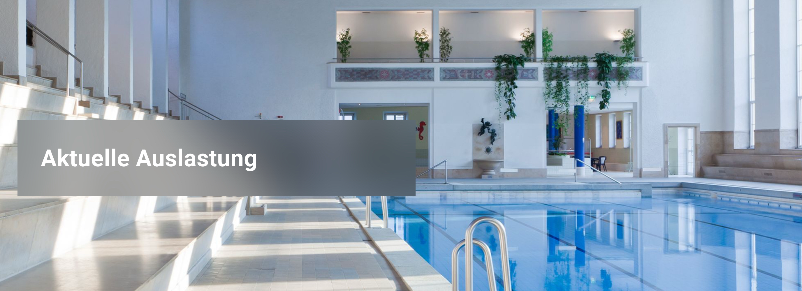

Optimal Swimming Slot

Comme la plupart d'entre vous le savent probablement, je vis à Munich/Allemagne. Et depuis que nous avons vécu au Vietnam, je me suis pris de passion pour la natation - peut-être pas vraiment passionné, mais je l'apprécie. J'ai appris à nager en crawl sur plus de 1 km en mer au Vietnam, et de temps en temps, je m'efforce de maintenir cette compétence ici à Munich.
Le problème est qu'à Munich, il faut une piscine publique (car je n'en ai pas de privée 😉), et les piscines publiques ont tendance à être pleines et bondées. Heureusement, le SWM (les services publics de Munich) fournit un site web qui nous indique à quel point les différentes piscines publiques sont fréquentées.
Même si je travaille 40 heures par semaine (ou à peu près…), je pourrais avoir une certaine flexibilité quant au moment où je vais nager : avant le travail, après le travail, peut-être même à l'heure du déjeuner. Et la question se pose, quand est-il préférable d'y aller. Quand les piscines sont-elles le moins bondées ?
Par exemple : je soupçonne que se rendre à la piscine le plus tôt possible le matin n'est pas la meilleure idée, car de nombreux travailleurs en col blanc sportifs le font. Donc, peut-être est-il plus judicieux de prendre le thé avec ma femme le matin, puis d'aller nager avant de me rendre au bureau.
Le meilleur dans ce problème : c'est un problème typique d'apprentissage automatique 😉
Voici donc le plan :
- Construire un scraper qui recueille l'occupation des piscines toutes les 10 minutes et la stocke quelque part
- Entraîner un modèle d'apprentissage automatique sur ces données
- Construire une interface utilisateur qui demande quand vous pourriez y aller et qui vous conseille quand vous devriez y aller
- Fonctionnalités supplémentaires : prendre en compte les week-ends et les jours fériés, les caractéristiques des piscines (c'est-à-dire que je préfère nager dans une piscine de 50 m)
Quelqu'un est partant pour construire un tel outil ? Envoyez-moi un email si vous voulez coder 😉